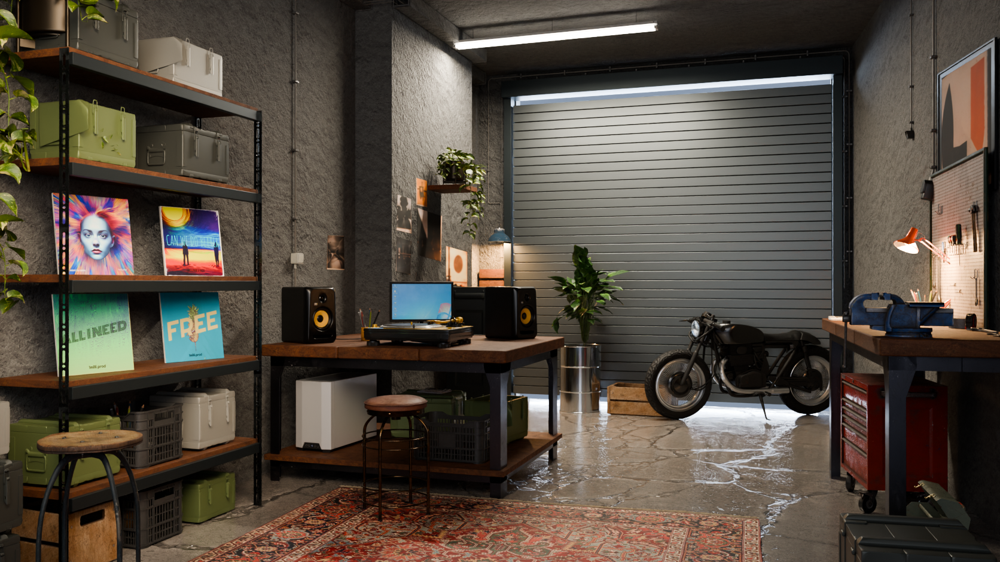
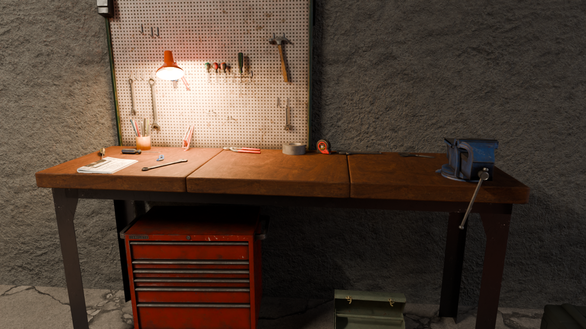
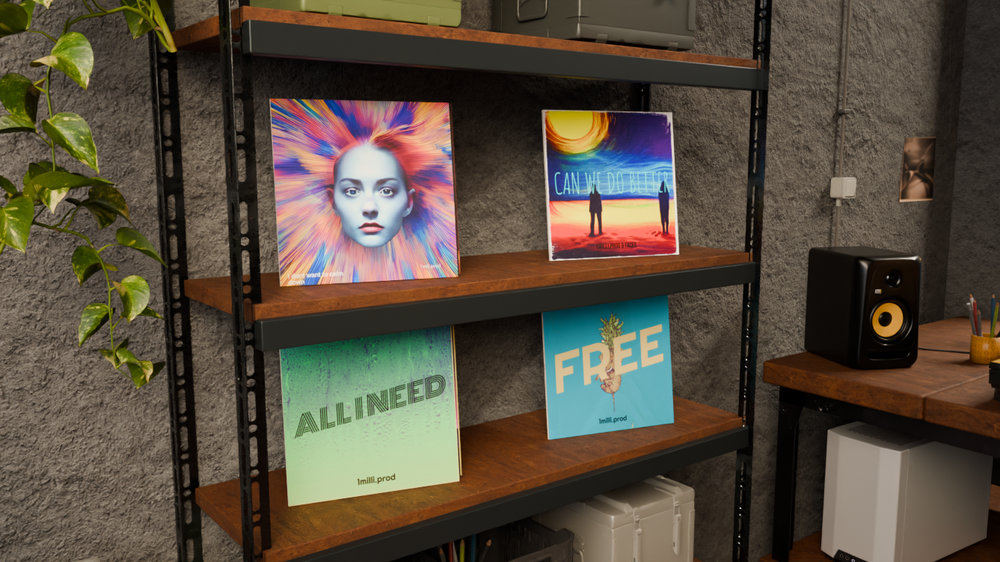

Vergelijking met het concept
Donkere minerale muren, licht op de platenkast, een gebarsten vloer en extra inrichting. Hieronder staan het concept en de huidige Blender-proef vanuit dezelfde vaste camera. De omgeving is nog niet af en nog niet in Unreal gebouwd.




Nog in uitwerking: precieze sfeer, vloerreflecties, planten, tafel- en kastdetails, kleed en krukken. De afmetingen zijn uit één afbeelding afgeleid en blijven aannames.